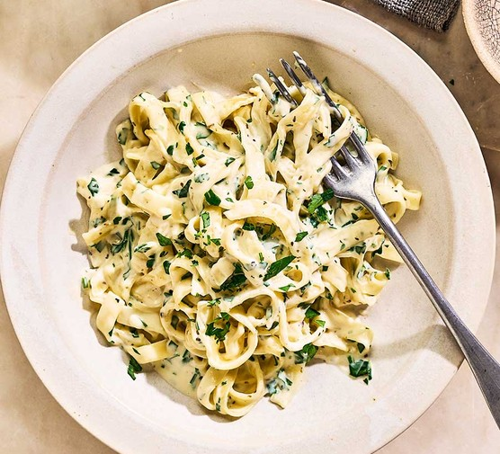

Alfredo

Alfredo Photo
This Alfredo recipe will have minimal ingredients and will have your
family hooked on your cooking!
This recipe can be mixed with chicken,shrimp,sausage,green peas,broccoli,and
and mushrooms. Side dishes can also be served with it like Caeser Salad, or a Classic Tossed Salad.
ingredients
- 24oz dry fettuccine pasta
- 1 cup butter
- 3/4 pint heavy cream
- salt and pepper to taste
- 1 dash garlic salt
- 3/4 cup grated Romano chesse
- 1/2 cup grated Parmesan chesse
Steps
- Bring a large pot of lightly salted water to a boil.
Add fettuccine and cook for 8 to 10 mintues or until al dente;drain.
- Melt butter into cream in a large saucepan over low heat;add salt,pepper,
and garlic salt. Increase the heat to medium; stir in grated Romano and Parmesan
cheese unitl melted and sauce has thickened.
- Add cooked pasta to sauce and toss until thoroughly coated;serve immediately.